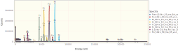
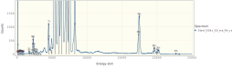
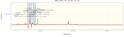

Fitting a Stainless Steel XRF Spectrum
Load the necessary libraries.
using NeXLSpectrum
using Gadfly # For plotting. I've added spectrum support.
using DataFrames # For tables.Load the spectra from EMSA files.
path = "XRF Stainless"
# We use map to apply `readEMSA` to each of the files
specs = steel, fe, ni, cr, ti, si, s, sn = map(fn->loadspectrum(joinpath(path, fn)), (
"Steel_50kv_50_ma_Rh_vac_D1.msa",
"Fe_50kv_50_ma_Rh_vac_D1.msa",
"Ni_50kv_50_ma_Rh_vac_D1.msa",
"Cr_50kv_50_ma_Rh_vac_D1.msa",
"Ti_50kv_50_ma_Rh_vac_D1.msa",
"Si_50kv_50_ma_Rh_vac_D1.msa",
"S_50kv_50_ma_Rh_vac_D1.msa",
"Sn_50kv_50_ma_Rh_vac_D1.msa",));
asa(DataFrame, Spectrum[ specs... ])8×8 DataFrame. Omitted printing of 4 columns
│ Row │ Name │ BeamEnergy │ ProbeCurrent │ LiveTime │
│ │ String │ Float64? │ Float64? │ Float64? │
├─────┼────────────────────────────┼────────────┼──────────────┼──────────┤
│ 1 │ Steel_50kv_50_ma_Rh_vac_D1 │ missing │ missing │ 119.973 │
│ 2 │ Fe_50kv_50_ma_Rh_vac_D1 │ missing │ missing │ 120.005 │
│ 3 │ Ni_50kv_50_ma_Rh_vac_D1 │ missing │ missing │ 120.027 │
│ 4 │ Cr_50kv_50_ma_Rh_vac_D1 │ missing │ missing │ 119.994 │
│ 5 │ Ti_50kv_50_ma_Rh_vac_D1 │ missing │ missing │ 120.012 │
│ 6 │ Si_50kv_50_ma_Rh_vac_D1 │ missing │ missing │ 119.986 │
│ 7 │ S_50kv_50_ma_Rh_vac_D1 │ missing │ missing │ 120.013 │
│ 8 │ Sn_50kv_50_ma_Rh_vac_D1 │ missing │ missing │ 119.974 │plot(specs..., xmax=25.0e3,klms=[n"Fe",n"Cr",n"Ni",n"Ti", n"Si",n"S", n"Mo", n"Rh"])
display(plot(steel,xmax=25.0e3, yscale=1.1,klms=[n"Fe",n"Cr",n"Ni",n"Ti", n"Si",n"S", n"Mo", n"Rh"]))
display(plot(steel,xmax=25.0e3, yscale=0.01,klms=[n"Fe",n"Cr",n"Ni",n"Ti", n"Si",n"S", n"Mo", n"Rh"]))
Build the filtered references which will be fit to the steel unknown.
# This Dict defines which is the lowest z element which can be measured for the K, L, M, N shells
firstelm = Dict(KShell=>n"Na", LShell=>n"Zn", MShell=>n"Sm", NShell=>n"Og")
# Build a detector to match the steel spectrum
det = matching(steel, steel[:FWHMMnKa], 120, firstelm)
# Build a 'VariableWidthFilter' top-hat filter to suit the detector
filt = buildfilter(VariableWidthFilter,det)
refdata = (
# ( spectrum, element, material ), # The ordering of `refdata` allows us to splat it into `filterreference(...)`
( fe, n"Fe", mat"Fe" ),
( cr, n"Cr", mat"Cr" ),
( ni, n"Ni", mat"Ni" ),
( ti, n"Ti", mat"Ti" ),
( si, n"Si", mat"Si" ),
( s, n"S", mat"S" ),
( sn, n"Sn", mat"Sn" ),
)
# Some necessary properties are missing from the spectra so provide them.
xtra = Dict{Symbol,Any}(:BeamEnergy=>40.0e3, :ProbeCurrent=>1.0, :Detector=>det)
refs = FilteredReference[]
for rd in refdata
append!(refs, filterreference(filt, rd..., props=xtra))
end
# Merge the missing properties into the unknown too.
merge!(steel, xtra)
res = fit(steel, filt, refs, false)
# Tabulate the results
asa(DataFrame, res)11×10 DataFrame. Omitted printing of 8 columns
│ Row │ Spectrum │ Feature │
│ │ UnknownLabel │ ReferenceLabel │
├─────┼────────────────────────────┼──────────────────────┤
│ 1 │ Steel_50kv_50_ma_Rh_vac_D1 │ Cr K-L3 + 5 others │
│ 2 │ Steel_50kv_50_ma_Rh_vac_D1 │ Fe K-L3 + 1 other │
│ 3 │ Steel_50kv_50_ma_Rh_vac_D1 │ Fe K-M3 + 3 others │
│ 4 │ Steel_50kv_50_ma_Rh_vac_D1 │ Ni K-L3 + 1 other │
│ 5 │ Steel_50kv_50_ma_Rh_vac_D1 │ Ni K-M3 + 3 others │
│ 6 │ Steel_50kv_50_ma_Rh_vac_D1 │ S K-L3 + 3 others │
│ 7 │ Steel_50kv_50_ma_Rh_vac_D1 │ Si K-L3 + 2 others │
│ 8 │ Steel_50kv_50_ma_Rh_vac_D1 │ Sn K-L3 + 1 other │
│ 9 │ Steel_50kv_50_ma_Rh_vac_D1 │ Sn K-M3 + 7 others │
│ 10 │ Steel_50kv_50_ma_Rh_vac_D1 │ Sn L3-M5 + 23 others │
│ 11 │ Steel_50kv_50_ma_Rh_vac_D1 │ Ti K-L3 + 3 others │Plot the residual spectrum. Note that Mo and Rh were not fit and so there remain significant peaks between 16 and 20 keV.
plot(res)